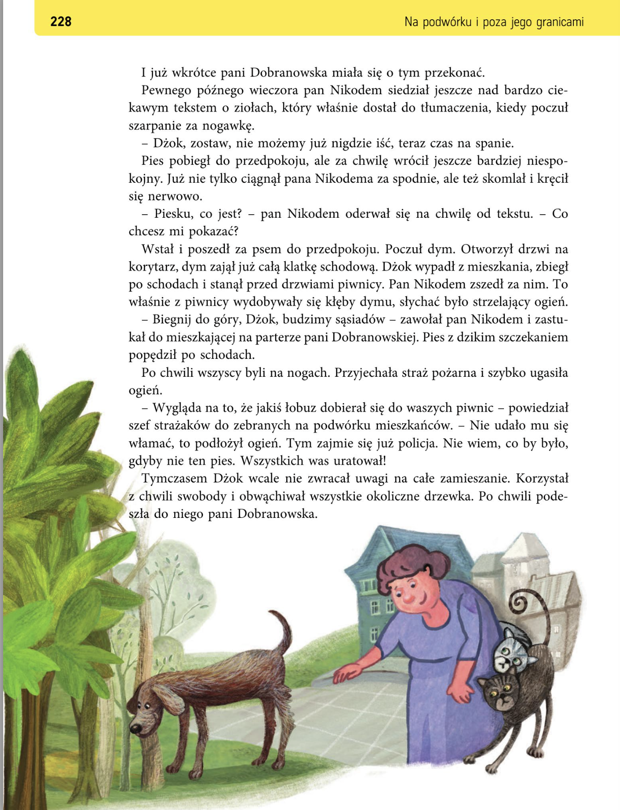
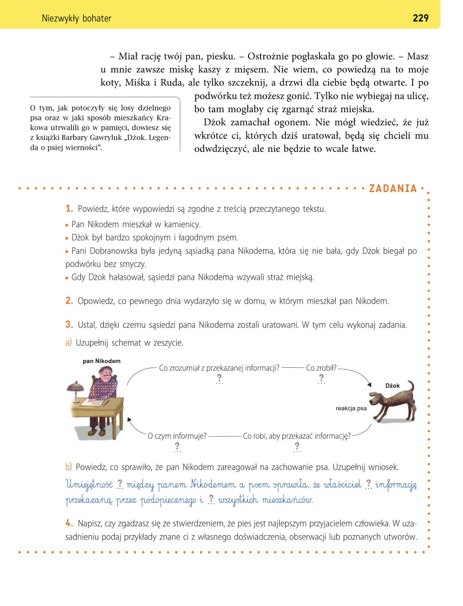

Porozmawiajcie o tym:
- Jakie obowiązki ma osoba, która chce mieć psa lub kota?
- Jak powinien zachowywać się dobry właściciel zwierzęcia?
- Jak należy opiekować się zwierzętami?
Napisz swoje pomysły:
Obowiązki właściciela zwierzęcia:
________________________________
________________________________
________________________________



1. Gdzie mieszkał pan Nikodem?
2. Jaki był Dżok?
3. Co zrobił Dżok?
После самостоятельного прочтения текста ученики указывают предложения, соответствующие содержанию произведения. (Prawda, Fałsz)
- Pan Nikodem mieszkał w kamienicy.
- Dżok był bardzo spokojnym i łagodnym psem.
- Pani Dobranowska była jedyną sąsiadką pana Nikodema, która się nie bała, gdy Dżok biegał po podwórku bez smyczy.
- Gdy Dżok hałasował, sąsiedzi pana Nikodema wzywali straż miejską.
- Pan Nikodem mieszkał w kamienicy. - Prawda
- Dżok był bardzo spokojnym i łagodnym psem. - Prawda
- Pani Dobranowska była jedyną sąsiadką pana Nikodema, która się nie bała, gdy Dżok biegał po podwórku bez smyczy. - Fałsz
- Gdy Dżok hałasował, sąsiedzi pana Nikodema wzywali straż miejską. - Fałsz
Zadanie 2. Przedstaw, co zdarzyło się w domu Nikodema.
Zadanie 3 - a. Określ, co sprawiło, że udało się uratować sąsiadów pana Nikodema. Wykonaj zadania i w zeszycie zapisz uzupełniony schemat.
Zadanie 3 - b. Określ, co sprawiło, że udało się uratować sąsiadów pana Nikodema. Wykonaj zadania. Określ, dzięki czemu udało się panu Nikodemowi zareagować na zachowanie psa. Zapisz uzupełniony wniosek.
Учитель просит учеников рассказать о событиях с участием Джока, главного героя произведения. Особое внимание уделяется тому, что происходило в тот вечер, когда начался пожар. Затем ученики анализируют, как удалось спасти дом от сгорания. Заполняя схему (вместе на доске или самостоятельно после распечатки учителем), они, несомненно, заметят, что умение общаться между паном Никодемом и его собакой позволило избежать несчастья. Учитель обращает внимание на условия эффективной коммуникации: сообщение — «Внимание! Опасность!»; понятный код — поведение собаки; контакт между отправителем и получателем — зрительный, тактильный. Также стоит подчеркнуть, что Джок стал героем дома ещё и благодаря реакции пана Никодема, который не только понял поведение своего питомца, но и предпринял правильные действия.
После заполнения схемы ученики записывают вывод:
Умение общаться между паном Никодемом и собакой привело к тому, что хозяин понял информацию, переданную питомцем, и предупредил всех жителей.
zadanie 3-a
Dżok à (co robi, aby przekazać informację?) skomle i kręci się nerwowoà (o czym informuje?) o tym, że czuje dym, że się gdzieś pali à pan Nikodem à (co zrozumiał z przekazanej informacji?) zrozumiał, że coś się dzieje à (Co zrobił?) poszedł za psem i poczuł dym.
zadanie 3-b
Umiejętność komunikowania się między Panem Nikodemem a psem sprawiła, że właściciel zrozumiał informację przekazaną przez podopiecznego i uratował wszystkich mieszkańców.
Opowiedz, co się wydarzyło.
Na początku __________________________
Potem ________________________________
Na końcu _____________________________
Na początku Dżok mieszkał z panem Nikodemem w kamienicy.
Potem pies zaczął szczekać i ostrzegł pana o pożarze.
Na końcu mieszkańcy zostali uratowani dzięki psu.
При подготовке письменного высказывания стоит напомнить лексику, помогающую выражать собственное мнение:
Wyrażanie własnego zdania:
- według mnie - по моему мнению
- uważam - я думаю
- myślę - я думаю
- moim zdaniem - по моему мнению
- wiem, że - я знаю это
Podawanie przykładów:
- przykładem może być - Примером может служить
- zdarzyło się - случилось (что)
- podobnie jak w utworze - подобно тому, как в произведении
- czytałam/czytałem książkę, w której — я читала/читал книгу, в которой
- oglądałam/oglądałem film, w którym — я смотрела/смотрел фильм, в котором
- znam historię pewnego psa, który — я знаю историю одной собаки, которая